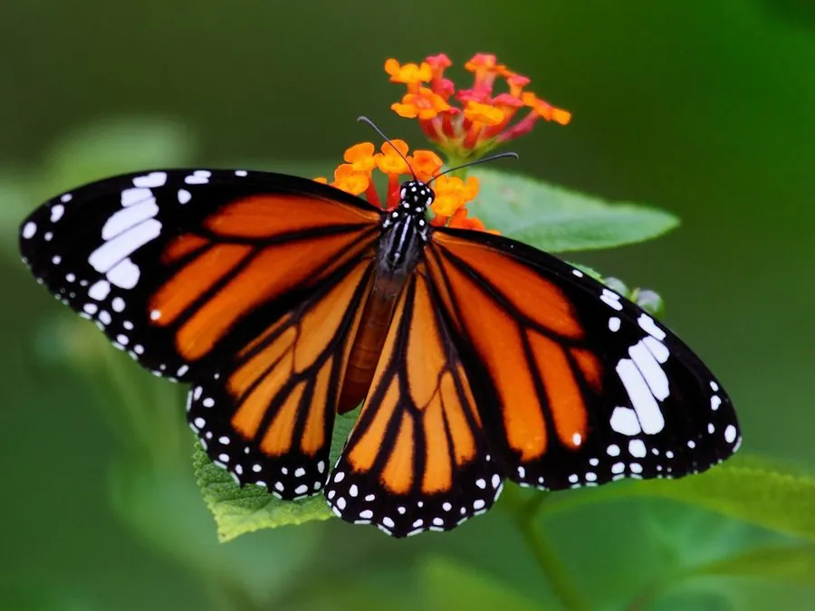

昆虫 · 动物界
虎斑蝶 Danaus genutia

橙黄色翅面布满黑色虎纹的常见斑蝶，幼虫取食萝藦科植物并储存毒素，中国南方至澳大利亚均有分布。
- 分类
- 门节肢动物门纲昆虫纲目鳞翅目科蛱蝶科属斑蝶属
- 栖息环境
- 林缘、灌丛、草地和花园，萝藦科植物附近
- 地理分布
- 中国南方、东南亚、南亚和澳大利亚北部
- 保护级别
- 暂无评估
物种志
虎斑蝶翅展约 7–8 cm，翅面橙黄色，前翅和后翅布满黑色的翅脉和横纹，形似虎皮，因此得名；后翅中央有黑色斑点，外缘有黑色带白斑的边。雄蝶后翅中央有一个黑色性斑，雌蝶体型略大。
它生活在林缘、灌丛、草地和花园，成虫飞行缓慢，喜欢访花吸蜜。雌蝶把卵产在萝藦科植物如马利筋、天星藤的叶片上，幼虫取食叶片并储存植物毒素，因此成虫和幼虫对鸟类有毒，橙黑相间的体色是典型的警戒色。虎斑蝶一年发生多代，分布于中国南方、东南亚、南亚和澳大利亚北部，常成群迁飞和越冬。它的蛹为翠绿色，挂在萝藦科植物的枝叶间，蛹期约两周，羽化后很快开始访花。
形态与习性
- 食性幼虫取食马利筋等萝藦科植物；成虫吸蜜
- 翅展约 7–8 cm
- 识别橙黄翅面布满黑色虎纹，后翅有黑斑
- 防御幼虫储存植物毒素，成虫有毒
- 分布中国南方、东南亚、南亚和澳大利亚北部
趣味知识
- 虎斑蝶翅面的黑色纹路像虎皮，橙黑配色是警戒色。
- 它的幼虫吃马利筋，把毒素储存在体内，鸟类不敢吃。
- 虎斑蝶在南方会成群越冬，有时和青斑蝶混在一起。